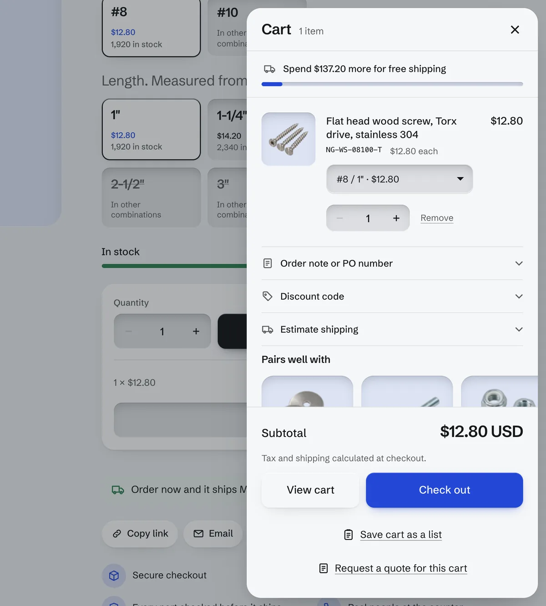

Pages
Cart and checkout
Choose a cart drawer that slides over the page, or a cart page, in Theme settingsCartCart.


#After adding to cart
After adding to cart chooses what buyers see next:
- Automatic: the drawer from product pages; a small notice under the header from cards, so buyers keep browsing.
- Drawer: always open the drawer.
- Notification: always the notice with View cart and Check out.
- Count only: only the cart count changes.
#In the cart
| Feature | Where to set it |
|---|---|
| Free shipping bar | Theme settingsCartFree shipping threshold, in your store currency; converted for other currencies. |
| Order note or PO number | Enable cart notes. |
| Discount code field | Show discount code field in the Cart drawer and Cart sections. Codes that do not apply are flagged. |
| Shipping estimate | Show shipping estimate in the same sections. |
| Pairs well with | Show "Pairs well with" in the Cart drawer section. |
| Change option | Lines of products with up to 50 variants get a menu to switch variant in place. |
| Undo | Removing a line offers Undo for eight seconds. |
| Next volume price | With B2B price breaks, each line says how many more reach the next price. |
| Gift wrapping | Theme settingsCartGift wrapping product: create a wrapping product first, then pick it. |
| Save cart as a list | Show "Save cart as a list"; keeps the parts and quantities as an order pad list. |
| Request a quote | Show "Request a quote" in the cart; sends the cart lines with your contact form. |
| Purchase order and delivery | Purchase order number and delivery instructions in the Cart section. Both are saved with the order as order attributes. |
| Download as CSV | Download cart as CSV in the Cart section: SKU, product, variant, quantity and prices, for a purchase request. |
| Copy cart link | Copy cart link in the Cart section: a link that fills another buyer's cart with the same items. |
| Free shipping wording | Theme settingsCartProgress message and Message when reached, for example "Add [amount] more for free freight". |
| Terms before checkout | Ask customers to agree to terms before checkout and Terms page. Checkout stays inactive until the box is ticked. |
| Express checkout | Show express checkout buttons in the Cart drawer section. |
#Empty cart
The empty cart shows links from a menu you choose (Popular categories menu), recently viewed products and the order pad, so it is never a dead end.